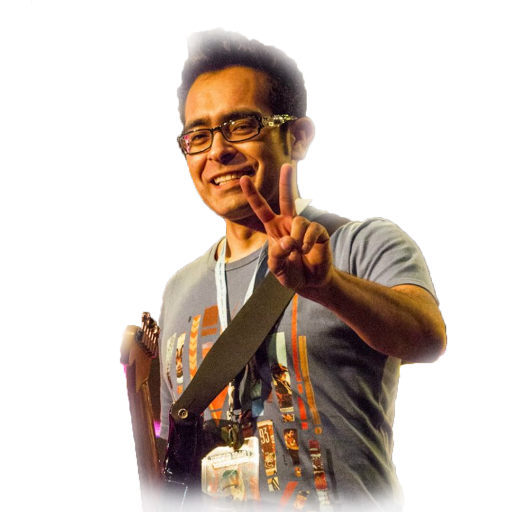
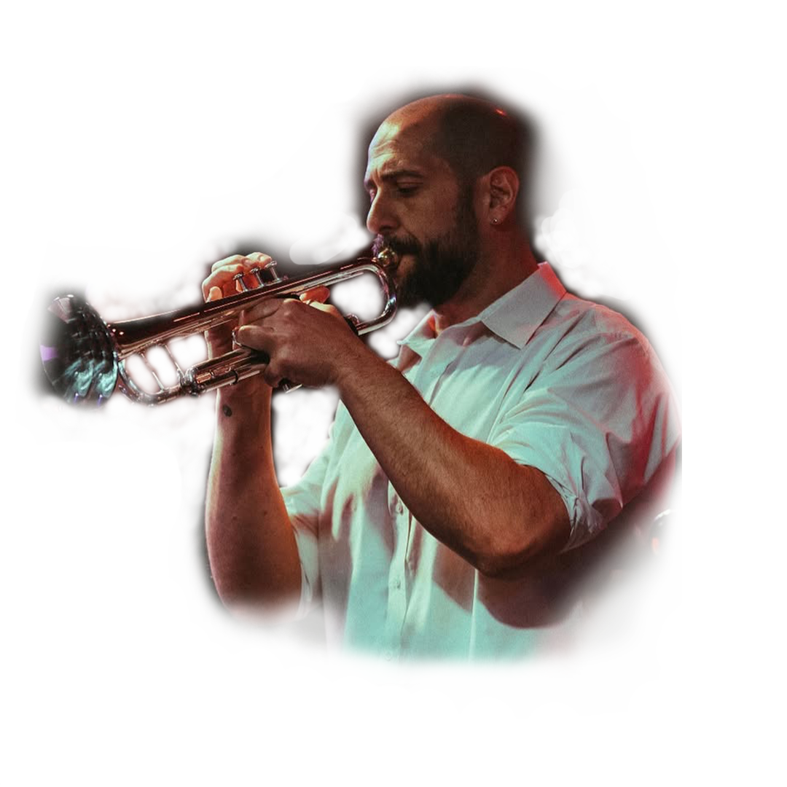
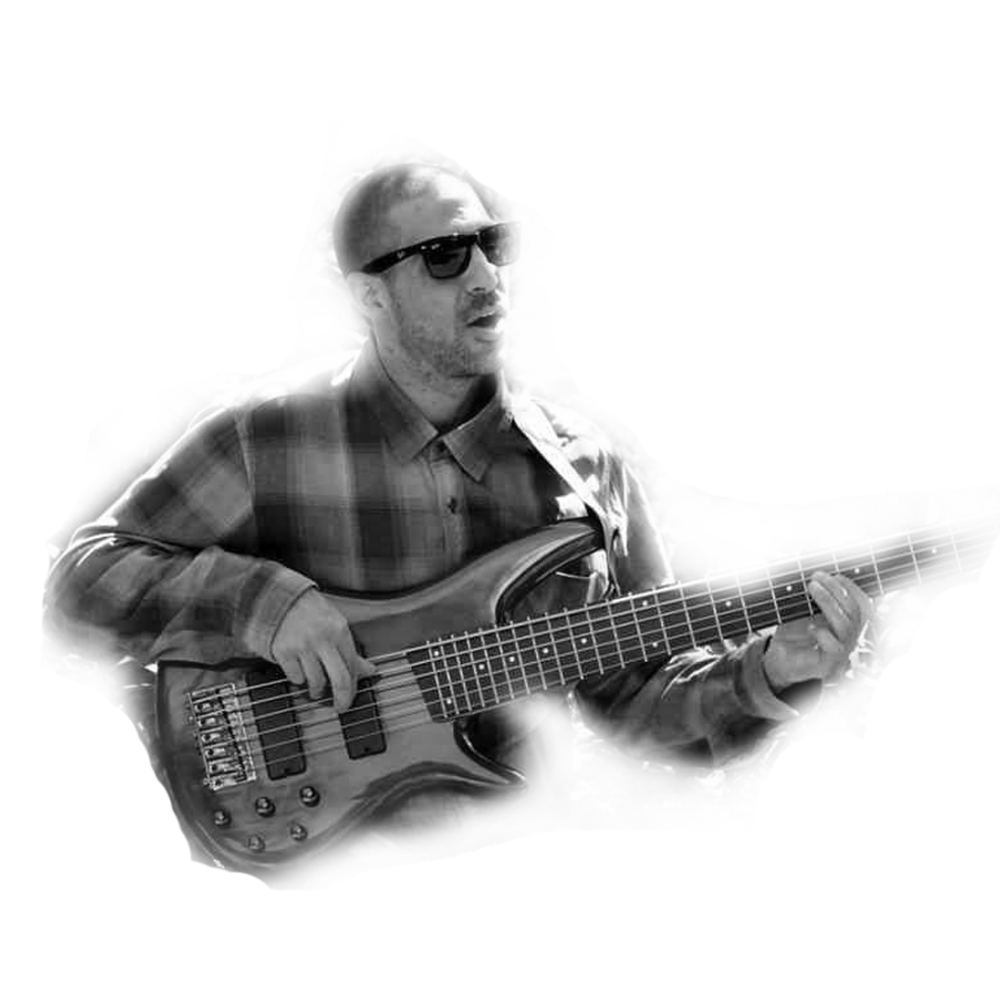

La Banda
La banda que acompaña a Dread Mar I está formada por músicos argentinos con amplia trayectoria en el reggae, cada uno con un recorrido sólido dentro de la escena nacional e internacional. Su experiencia y sensibilidad musical aportan el sonido característico que complementa a la perfección la voz cálida y emocional de Mariano, generando una identidad única tanto en vivo como en estudio. El trabajo conjunto entre estos músicos no solo enriquece el sonido de la banda, sino que también refuerza el mensaje espiritual y emocional que transmite el proyecto. Juntos logran una propuesta sólida, auténtica y cargada de energía, que ha resonado con miles de personas en Argentina y en toda América Latina.
Integrantes
Guitarras rítmicas y melódicas potentes. Bajo firme con groove característico del reggae roots. Teclados con atmósferas profundas. Batería con beats suaves y precisos. Coristas que suman armonía y calidez espiritual.

Guitarrista
Alejandro Ramos “Negro”
Voz y composición
Mariano Castro
Baterista
Walter "Tate" Aguirre

Trompeta
Lucas Colamusi

Bajista
Diego Gonzalez
Teclado
Mariano Zapata